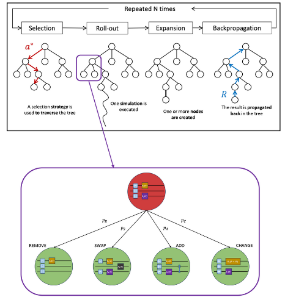

MSc Research Project · Search & Optimization · Quantum AI
MCTS for Quantum Ansatz Search
Background
Variational Quantum Algorithms use parameterized quantum circuits to solve optimization problems, but their performance depends heavily on the chosen circuit structure, or ansatz. Designing an effective ansatz is difficult because the search space of possible quantum circuits is extremely large and often requires domain expertise. This project investigated Quantum Architecture Search, where the goal is to automatically discover effective circuit designs for a given quantum optimization problem. Specifically, we explored how Monte Carlo Tree Search could be adapted to search through quantum circuit designs more efficiently.
Contribution
My contribution focused on evaluating and extending Monte Carlo Tree Search variants for Quantum Architecture Search. The project tested several modifications to the baseline MCTS approach, including terminal nodes, grouping circuits by gate type, grouping by high-level actions, combining multiple grouping strategies, and applying progressive widening to control the branching factor. These variants were evaluated across quantum chemistry tasks, such as estimating the ground-state energy of H₂, H₂O, and LiH, as well as variational quantum linear solver problems. The work involved comparing variants not only by reward, but also by circuit complexity, especially the number of parameterized rotation gates and CNOT gates.

How MCTS is adapted for quantum ansatz search
Grouping Strategies
Grouping strategies were introduced to make Monte Carlo Tree Search more effective in the large and highly branching search space of quantum circuit design. Instead of treating every possible circuit modification as an independent choice, the search can first reason over broader categories of actions. Grouping by gates lets MCTS prioritize promising gate types before selecting their exact placement or parameters. Grouping by action separates additions, deletions, swaps, and parameter changes, allowing the search to decide what kind of circuit modification is most useful at a given point. Terminal nodes limit unnecessary expansion once a circuit is already promising, while progressive widening controls how quickly new child nodes are introduced as the tree grows. Combining these strategies creates a more structured search process that can balance exploration, efficiency, and circuit simplicity.Group by Gates
Adds a group node for each type of gate, as well as a deletion gate.
Group by Action
Adds a group node and lets MCTS decide between adding, swapping, deleting, or changing the parameters of a gate before choosing a specific action.
Terminal Nodes
Unexpandable nodes that limit the depth of already good circuits in the MCTS tree.
Progressive Widening
Applied to group by gates, helps handle the tree growing quickly.
All Groupings
Adding multiple group nodes together.
Results & Findings
The results showed that no single MCTS variant was best across every Quantum Architecture Search problem. However, specific variants improved over the baseline for particular problem types. Progressive widening was especially effective for the ground-state energy estimation problems, while grouping by gates performed more strongly on the variational quantum linear solver tasks. The most promising overall combination was grouping by actions with terminal nodes and progressive widening, which outperformed the baseline on four of the five tested problems. The project also found that several grouping-based variants produced smaller circuits with fewer rotation and CNOT gates, making the resulting circuits easier to optimize and potentially less noisy on real quantum hardware.Retrospective
Revisiting this project now, I see it as a useful introduction to experimental algorithm design, quantum circuit optimization, and the challenges of applying a general search method to a highly specialized domain. At the time, the focus was mainly on implementing and evaluating MCTS variants, but with more distance from the project, I find myself thinking more about the assumptions behind the search itself. One question I have now is whether representing each node as a concrete quantum circuit is the best fit for MCTS. A different representation, such as ZX-calculus, might structure the search space in a way that makes certain transformations or simplifications easier to discover. This connects to a broader challenge in Quantum Architecture Search: unlike finite games such as chess or Go, there is no clear terminal state. Any circuit can be evaluated as a possible stopping point, but the search can also continue adding gates indefinitely, while parameterized gates make the action space effectively infinite, which breaks the assumptions of the MCTS algorithm. If I were to do this project again, I think a promising direction would be to make the search more aware of quantum circuit structure. Rather than adding or changing gates one at a time, the search could explore common gate pairs, reusable circuit motifs, or ways to prune gates and parameters that do not meaningfully affect the circuit output.